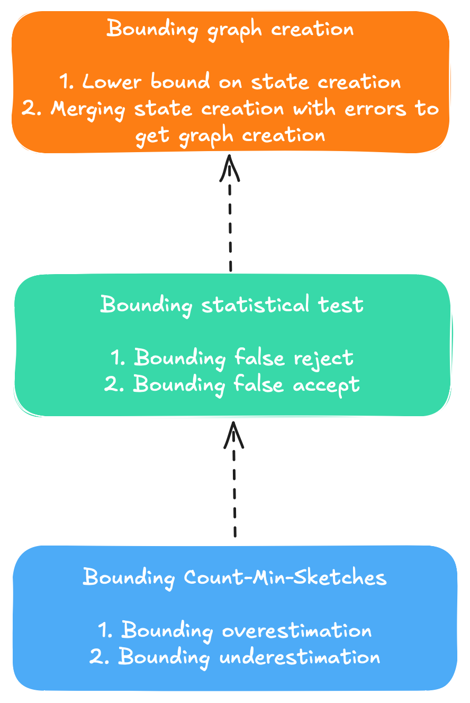

In our publication Learning state machines from data streams: A generic strategy and an improved heuristic we introduced an algorithm learning probabilistic automata from data streams. Probabilistic means that parsing the automaton with a string will yield its probability to occur, information that is interesting when identifying rare events of the data stream. Rare events are intesting in the domain of anomaly detection and can e.g. pose network threats on a network or rare execution traces in software systems.
However, a problem of the algorithm is to know how close the probability it maps actually is to the real probability. Statistics tells us that the more samples we gather the more certain we can be about our predictions. Therefore, the more samples a node in our automaton sees the more likely it's predicted probabilities will resemble the probabilities. However, we can never be certain. This is a problem inherent to machine learning frameworks and has be studied by famous statisticians such as Vladimir Vapnik and Alexey Chervonenkis, who are famous for the VC-dimension, a concept of statistical learning theory.
Another approach to estimate the learning capacity of a statistical learner is a proof of formal PAC-bounds (PAC=Probably Approximately Correct). We take this approach to show the correctness of our algorithm in the extended version of our publication, found here. However, because the proof is long and not straightforward to understand, I outline its main ideas and steps in this blog post. For simplicity I use the same notation as in the paper, thus this blogpost is a complemetary piece to the original proof. With that said, let's dive in with the definition of PAC-bounds and why we use them.
Why proving PAC-bounds? Usually when developing algorithms the developer will provide a proof of correctness. This is a formal proof using mathematical methods showing that an algorithm outputs the correct result for each input that it is designed for. In other words, a proof of correctness shows that an algorithm works and gives correct output.However, many algorithms, including many machine learning algorithms, rely on statistics, and there is no such thing as a correct input and a corresponding correct output. Therefore, proofs of correctness are hard to define for such algorithms.
PAC-bounds aim to close this gap. They are a statistical framework that provides statistical guarantees on the goodness of the approximation quality a learning algorithm can achieve, given it sees enough samples. More formally, the definition of PAC-bounds are as follows:
Definition: The Probably Approximately Correct (PAC) learning framework is a framework to analyze machine learning algorithms. Formally, we are given a class of distributions $\mathcal{D}$ over some set $X$, where $X$ remains fixed. A machine learning algorithm then PAC-learns $\mathcal{D}$ if for each $\delta>0$ and each $\epsilon > 0$ the algorithm takes $S(\frac{1}{\epsilon}, \frac{1}{\delta}, |D|)$ i.i.d. drawn samples from a $D \in \mathcal{D}$ and returns a hypothesis $H$ s.t. $L_1(D, H) \leq \epsilon$. In this notation, $|D|>0$ is a measure of complexity over $\mathcal{D}$. We say a PAC learner is efficient if $S( \cdot )$ and $T( \cdot )$ are polynomial in all their respective parameters.
$L_1$ in this definition is the $L_1$-distance, which is a measure for the maximum sum of errors the output $H$ produces when compared with $D$. This definition essentially tells us that if we have a PAC-learner, and we let it learn a problem, then the learner learns the target distribution $D$ with a maximum sum of errors of $\epsilon$, for any chosen maximum error $\epsilon$, with a probability $1-\delta$, if samples are provided i.i.d. from the target distribution. Pretty cool I'd say.

In order to show formal PAC-bounds we have to build them from the ground up. We have to start with the smallest
unit of operation in our algorithm, show that we can probabilistically bound the error they produce, and move
it up layer by layer until we cover the whole algorithm. In our publication we choose Count-Min-Sketches (CMS) as the
most basic data structure. Hence, we first have to show that the CMS and the operations we perform on them are bounded.
We store samples distributions in the CMS and test with the Hoeffding-bound whether the two sampled distributions are
equal or not. If the sampled distribution satisfies
$$\left| \frac{\hat{c}_{\sigma_{q_1}}}{n_{q_1}} - \frac{\hat{c}_{\sigma_{q_2}}}{n_{q_2}} \right| > \sqrt{\frac{1}{2}log
\left(\frac{2}{\alpha}\right)}\left(\frac{1}{\sqrt{n_{q_1}}}+\frac{1}{\sqrt{n_{q_2}}}\right)$$
, then the two distributions are considered equal. When using CMS it needs to be noted that the data structure
works similar to a multimap, but unlike a multimap it does not return exact counts, but instead approximate counts. It is thus
a memory saving data structure to count elements of a data stream, where the cardinality of elements to store is unknown before
runtime, or too large. Hence, when drawing sampled statistics from a CMS we get an induced error from estimating the sampled counts.
Since only the left hand side of the Hoeffding-bound depends on the statistics we draw, and the right hand side is only dependent on the total size of samples it suffices to show that the left hand side is error bounded. If the error on the left hand side is zero, the sampled frequencies are the real ones and the approximation effect of the CMS is zero. We can make two kinds of mistakes here: We can overestimate or underestimate the true value on the left hand side of the equation. We start bounding the overestimation:
Theorem 1: Given the parameters ($\beta$, $\gamma$), and given two CMS whose width $w$ and depth $d$ of a CMS assume $w=\left\lceil{\frac{e}{\beta}}\right\rceil$ and $d=\left\lceil{\ln \frac{1}{\gamma}}\right\rceil$. The error on the left hand side of the Hoeffding-test is upper-bounded by $\beta$ with probability at least $1-2\gamma$.
In order to proof the theorem we start with the error bounds on the CMS given by the original authors of the data structure , and we define a new random variable from their approach using indicator variables. Subsequently we use the Markov bound $$ P(X>a) \leq \frac{E(X)}{a} $$ to bound the random variable, showing that the divergence from the expectation value of the left hand side of the Hoeffding test above is bounded. However, this proof only works when the left hand side's term before taking the absolute value is larger than or equal to zero. Next we bound the case of underestimating the left hand side:
Theorem 2: With a probability of at least $1-2\gamma$ the left hand side of the Hoeffding-test with CMS is not underestimated by an offset larger than $\beta$.
The proof is similar to the one of Theorem 1, so we can skip the explaination here. Last but not least we need to combine the two bounds. The two cases can be generously bound using the union bound, a useful tool in general. From $$P(A \cup B)= P(A) + B(B) - P(A \cap B) \leq P(A) + P(B)$$ we obtain the union bound as $$ P(\cap_i A_i) \leq \sum_i P(A_i).$$ This settles our score with the CMS.
Having bound the error on the CMS data structure, knowing what can happen when we approximate the sampled distributions, rather than having the actual one, we can move toward seeing what happens when we want to perform the actual statistical test on them. We will also have to reason about how many samples to read in order to get good statistics in first place. We start with wondering about how many samples to read for a state to even get created. The following theorem gives us no precise answer, but an intuition of how data samples from the data stream propagate through the tree representing the unmerged automaton:
Theorem 3: Given batch-size $B$, upper bound on state $n$, and $p_{min}$ the minimum transition probability $\lambda_{min}=\min_{i, j} \lambda(q_i, a_j)$. The algorithm reads $\mathcal{O}(nBN_{max})$ samples from the stream, where $\mathbb{E}[|\lambda(q', a')|] = N_{max} \cdot \lambda_{min}$, with $q', a'$ chosen s.t. $\lambda_{min}=\lambda(q', a')$.
Here, $n$ is an upper bound on the states that are expected of the final automaton (technically we do not need this) in a practical scenario, but we need it to show PAC-bounds, see this publication by Palmer and Goldberg (which has greatly served as a guideline for me while constructing my own proof). What this means essentially is that we know that there must a minimum non-zero transition probability within the automaton. Once we know that transition probability we can define an expected constant proportional to the inverse of the minimum probability, and then the maximum number of expected samples grows linearly in the number of states and the batch size. While not needed for the remainder, it is still nice to know that we can bound how many i.i.d. samples the algorithm needs. The proof follows again via the Markov bound and proof by induction. With that in mind we move on bounding the probability of making a mistake in the statistical test. An error can either be a false reject (should merge those two states, but choose not to), or a false accept (should not merge those two states, but actually choose to merge). We first look at the probability of a false reject when the CMS are correct:
Theorem 4: Given the Hoeffding-test as defined earlier, and assuming no collisions happened in the CMS, then the probability of a false reject is kept below $2\alpha$.
We get this bound for free by using the same test as Carrasco and Oncina . The test is essentially a clever reformulation of the classical Hoeffding-bound, where they inject an $\alpha$ parameter that serves as an upper bound for the error. We can simply use their results here. However, the probability for a false reject we'll have to bound on our own. We introduce a notion for what it means to distinguish two distributions:
Definition 1: We call two distributions $D_1$ and $D_2$ $\mu$-distinguishable when $L_{\infty}^p(D_1, D_2) \geq \mu$. We call a PDFA $T$ $\mu$-distinguishable when $\forall q_1, q_2\in T: L_{\infty}^p\left(D_{q1}, D_{q2}\right) \geq \mu$.
This definition simply tells us that we use a threshold, and if the maximum distance is larger than it we say the distributions are not the same. We call this threshold $\mu$, and we want it to be the maximum induced distance between two distributions. Now with that definition we can go to the following, more interesting theorem about the bound for a false accept:
Theorem 5: Assuming the target PDFA we are trying to learn is $\mu$-distinguishable, there exists a minimum sample size $m_0$ per state such that the probability of a false accept per state-pair is bounded by $\frac{\delta'}{2n^2|\Sigma|^2}$ under the assumption of no collisions.
Assuming that the target PDFA is $\mu$-distinguishable is a reasonable assumption and a simple mathemcatical formulation. The proof for this theorem follows by first bounding the variance term of the earlier indicator variables using the Cauchy-Schwarz inequality, and subsequently using the Chebychev-Cantelly inequality. After that we have to move the CMS back into the picture. We already know that we can bound the error on the CMS, and we know what happens when they do not mistakes. The following theorems describe what happens when they make a mistake:
Theorem 6: Given the Hoeffding-test and given two frequencies estimated via CMS, allowing for collisions. Then the probability of a false accept under an updated Hoeffding-bound $\sqrt{\frac{1}{2}log\left(\frac{2}{\alpha}\right)}\left(\frac{1}{\sqrt{m_1}}+\frac{1}{\sqrt{m_2}}\right) - \beta$ is bounded by $\frac{\delta_2'}{2n^2|\Sigma|^2}$.
Theorem 7: Narrowing the Hoeffding-test via $\sqrt{\frac{1}{2}log\left(\frac{2}{\alpha}\right)}\left(\frac{1}{\sqrt{m_1}}+\frac{1}{\sqrt{m_2}}\right) - \beta$, the upper bound for a false reject remains bounded by a maximum of $2\alpha$.
Their proofs are trivial, once Theorem 4 and 5 have been proven. Therefore we can move to the next topic.
Once we can bound the number of samples needed to perform statistical tests in a way that we can bound the minimum error, we have everything we need to follow Palmer and Goldberg analogously. I will outline their main ideas in this last section of this post and refer again to their work to give credits where credits are due. The first interesting statement is the following theorem:
Theorem 8: Let $A'$ be a PDFA whose states and transitions are a subset of those of $A$. $q_0$ is a state of $A'$. Suppose $q$ is a state of $A'$ but $\tau(q, \sigma)$ is not a state of $A'$. Let $S$ be an i.i.d. drawn sample from $D_A$, $|S|\geq \frac{8n^2|\Sigma|^2}{\epsilon^2}\ln \left( \frac{2n^2|\Sigma|^2}{\delta'} \right)$. Let $S_{q, a}(A')$ be the number of elements of $S$ of the forms $\sigma_1 a \sigma_2$, where $\tau(q_0, \sigma_1)=q$ and for all prefixes $\sigma_1'$ of $\sigma_1$: $\tau(q_0,\sigma_1')\in A$. Then \begin{equation} P\left(\left|\frac{S_{q,a}(A')}{|S|} - \mathbb{E}\left[\frac{S_{q,a}(A')}{|S|}\right]\right| \geq \frac{\epsilon}{8n|\Sigma|}\right) \leq \frac{\delta'}{2n^2|\Sigma|^2}. \end{equation}
This is a statement on how many samples need to be read by the algorithm to produce new states. The proof follows the Hoeffding-bound, and the number shows up again in the chosen batch-size in the next, more important theorem:
Theorem 9: Let our algorithm read samples with a batch-size of \[ B \geq max\left(\frac{8n^2|\Sigma|^2}{\epsilon^2}\ln\left(\frac{2n^2|\Sigma|^2}{\delta'}\right), \frac{4m_0n|\Sigma|}{\epsilon}\right), \] then there exists $T'$ a subset of the transitions of $A$, and $Q'$ a subset of the states of $A$, s.t. $\sum_{(q, \sigma) \in T'} D_A(q, \sigma) + \sum_{q\in Q'}D_A(q)\leq \frac{\epsilon}{2}$, and with probability at least $1-\delta'$, every transition $(q, \sigma) \not \in T'$ in target automaton $A$ for which $D_A(q, \sigma) \geq \frac{\epsilon}{4n|\Sigma|}$, has a corresponding transition in hypothesis automaton $H$, and every state $q\not\in Q'$ in target automaton $A$ for which $D_A(q)\geq \frac{\epsilon}{4n|\Sigma|}$, has a corresponding state in hypothesis automaton $H$.
What this essentially means is that with a high probability we create states and transitions that are isomorphic to the target graph. Meaning our states and transitions are correct. The batch-size is intentionally chosen large, so that in each iteration of the algorithm at least one new state is created, i.e. the batch-size is intentionally engineered so that we can almost guarantee that a new state will emerge. This also helps to bound the number of iterations the algorithm performs in relation with $n$ and $|\Sigma|$, so it also gives us runtime-guarantees. Stitching all of the above together finally yields
Theorem 10: Given a target PDFA $A$ and given our streaming strategy along with our merge heuristic. Given the required input parameters $L', n', \mu', \Sigma, \epsilon, \delta$, then for each $L'\geq L$, $\mu' \leq \mu$, and $n' \geq n$ our framework returns a hypothesis automaton $H$ such that with probability at least $1-\delta$ the error is bounded by $L_1(H, A)\leq \epsilon$,
... and there went 2 months of my lifetime. However, I hope you got a little more familiar with some techniques and how to use them. Essentially PAC-bounds proofs need a series of subsequent bounding, where each step provides the foundation for the next one, similar to system design almost. The bounds will reveal how to choose parameters such that the bounds are fulfilled. In practice those numbers often get really large however, so often the bounds only serve a theoretical purpose, showing that at least in theory the algorithm can fulfill error bounds.
As an upside to all this however we have mathematical guarantees that our learner does learn the correct result. if we could we could bake those found parameters into the actual algorithm and have it run on a real data stream, say a network of computers. Under the assumption that there is a natural behavior of the network (similar to say energy consumption in an energy network: In the evening everbody goes home turns on the light, hence more activity in the evenings and less during daytime for private households), then a model for the network can be built. And if we choose our parameters correctly we can be probably approximately sure (pun intended) that the result will be correct, and the model will be able to raise alarms on anomalies.
More importantly: If you enjoyed this article or want to stay connected please feel free to reach out. You can find me on LinkedIn and GitHub.